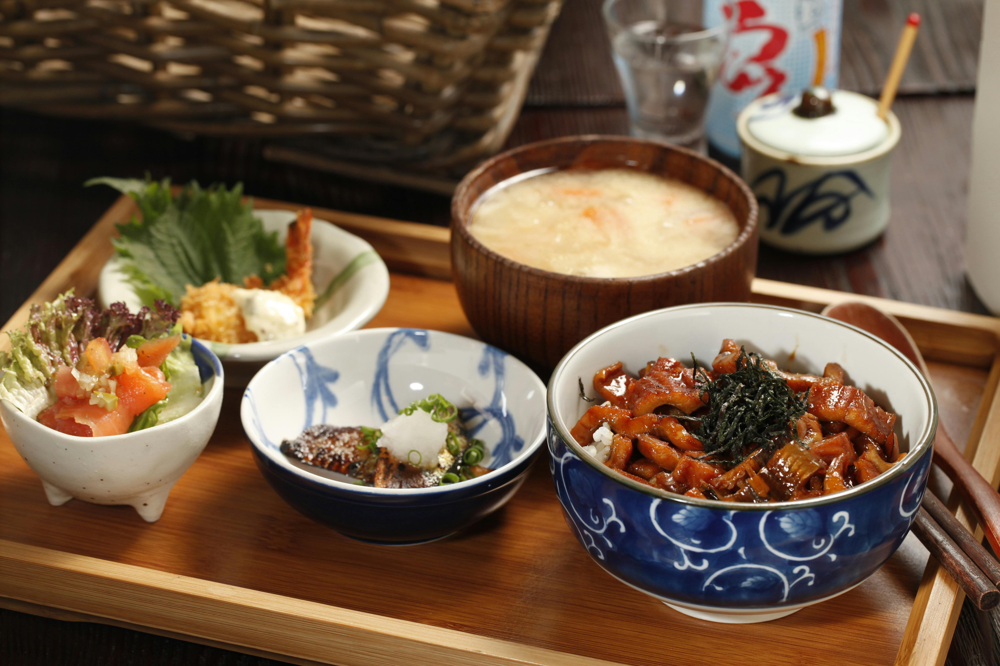
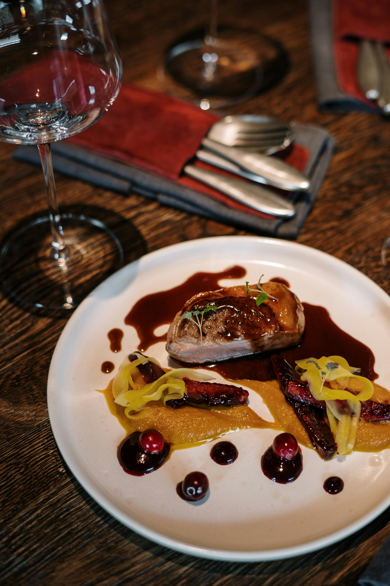
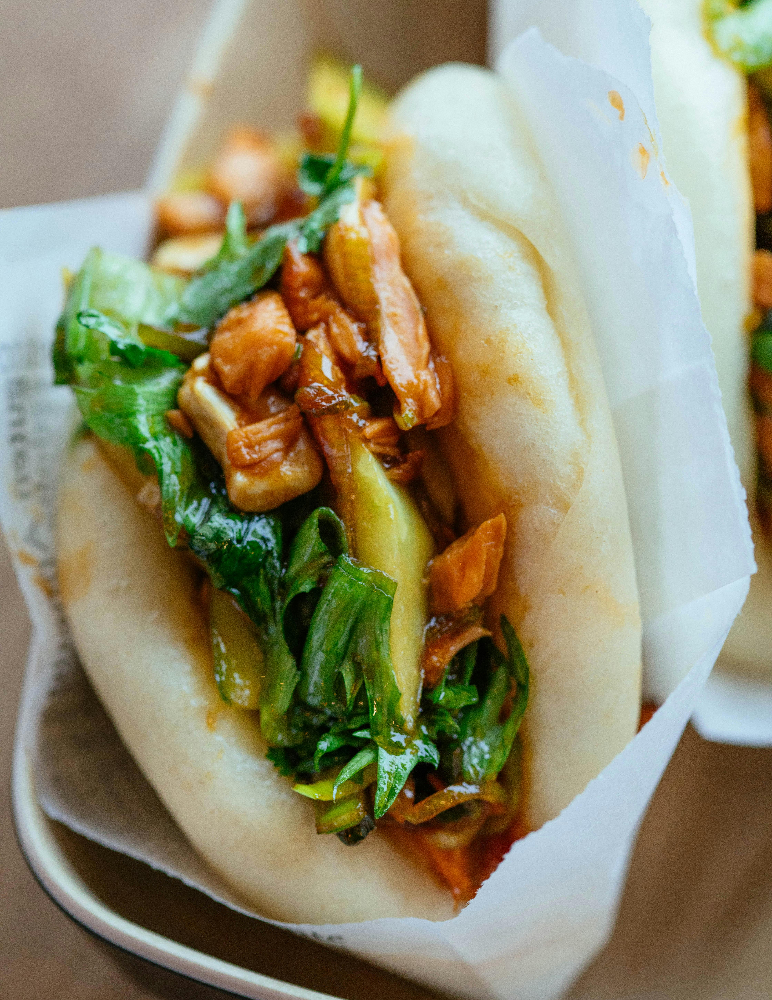
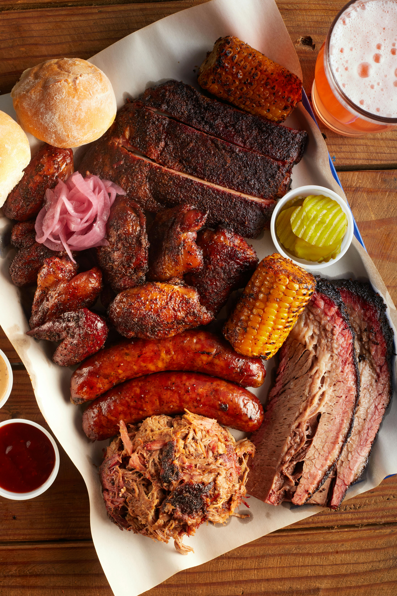

Travel Taniti
Restaurants
Taste of Taniti
Located in Taniti City, Taste of Taniti is locally owned and serves traditional Taniti cuisine. It is perfect for a quick meal and does not require reservations.
Bite Sized

Bite Sized is the perfect stop for any homesick american. Made to order, these sliders are guaranteed to hit the stop. No reservations required.
Freddy's Fried Fish

Freddy's Fried Fish is located directly off the beach of Yellow Leaf Bay. Many beach goers come here for lunch and a cool drink. Freddy's has a surf shop atmosphere, where all are welcome. No reservations required.
Seaview Steakhouse
Seaview Steakhouse is located on top of the 4-star resort. It offers Japanese A5 Wagyu beef and other imported dishes. This restaurant is the most exclusive on the island. You will need to make a reservation months before your trip
Catalina's Kitchen

Catalina's Kitchen is located at the edge of Taniti City near the rainforest. Catalina's Kitchen uses locally grown rice, fruits, and vegetables to make vegetarian friendly meals. Reservations are not required but wait times can become long around dinner time.
Seoul Food

Located in the heart of downtown Taniti City, Seoul Food brings Korean style fried rice to the island. Reservations are recommended but are not required.
Ngon Cafe
Ngon Cafe is located in downtown Taniti City and offers visitors a varity of Vietnamese inspired dishes. Their famous Gua Bao will have you coming back for more. No reservations required.
Capital City BBQ
Capital City BBQ was first started in Austin, Texas. Now its brings the flavors of true Texas BBQ to the island of Taniti. No Reservations required.


Grocery Stores
Taniti has two supermarkets, two smaller grocery stores, and one 24 hour convenience store. Check the directions to find the closest one to you.